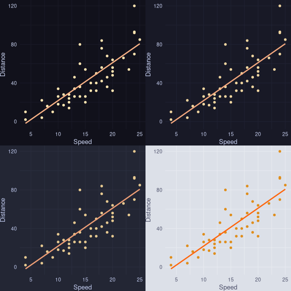

{ricethemes}If you have not already checked out {ricethemes},
check out my blog post introducing it.
Usually when making plots, I am not interested in the precise values on either the x or y axis – only the general pattern or trend. Therefore, I do not usually use grid lines since they are unnecessary and plots generally look better without them. However, on some occasions I want to know the value of a specific observation and therefore need grid lines.
I have now added a theme, theme_ctp_grid(), with four flavors in
{ricethemes} which has grid lines. The theme is relatively minimal since it
does not have any axis lines and only a single color for both the minor and
major grid lines. I decided on grid lines for both the x and y axis to make
this theme a bit more practical. The grid lines are in a slightly brighter
color than the main background which is still the same as in theme_ctp()
If you have already installed {ricethemes}, update it with the following
command to get the latest themes, which you can also use to install it if you
have not already:
pak::pkg_install("mackrics/ricethemes")
Enjoy!
